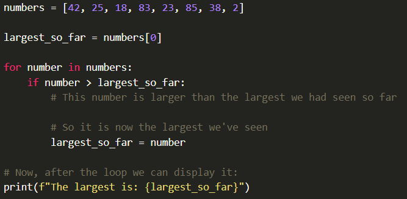
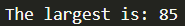
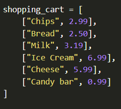
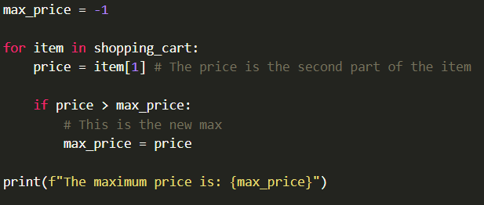
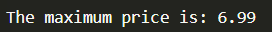
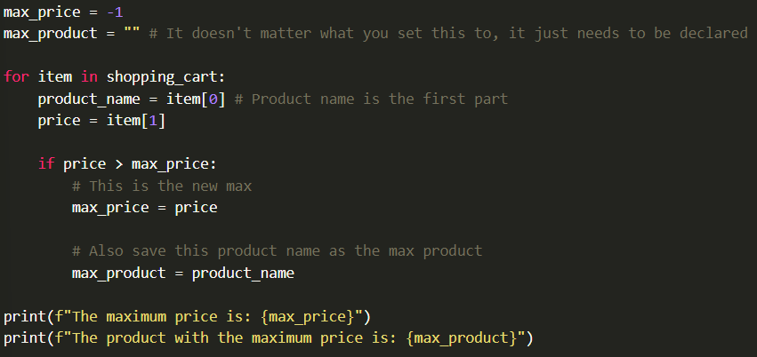

A way yo find the largest number in a list is to keep track of the largest number found to date, and then update that value if you find a new one that is larger. Example as follows:
Produces the following result:
It is important to remember to start the "largest_so_far" variable at either the first value (assuming it's not an empty list) or else something that you know will be smaller than everything in your list. Otherwise, you won't consider some numbers. For example, if you started it at 10, then you would never consider anything less than 10.
What if you want to know not only which number is the largest, but also the item that is the largest? For example, you may want to know not only the most expensive price in your shopping cart, but the actual product that is the most expensive. The logic above will only find the largest value. To find the largest item, you'll also need to keep track of its name or value along the way.
Consider the following list of products in a shopping cart, along with their prices:
In order to find the most expensive price, we can iterate through it as before:
This produces the following output:
If we want to find the name of the item that is the most expensive, we need to declare a variable (for example, max_product) before the loop to keep track of the product that had the maximum price. Then, whenever we update the max_price to save a new price, we also update the max_product to be the corresponding product name. Example:
This is the output:

In addition to the code samples you've seen here, keep in mind that you can use all of the other components you have learned throughout the semester in conjunction with files. For example, if you wanted to restrict your analysis of products to only those that had a price over certain amount, or that had a name matching certain criteria, you can include an if statement in the middle of the loop that is iterating through the file.